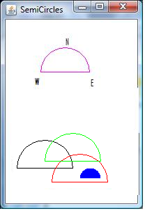

Remember not to create packages. Use the default package
6A
Make a class Verb to represent a verb in English.
Define a constructor that takes a String as as a parameter
Provide the methods:
getVerb() - returns the actual verb
getPast() - returns the past tense of the verb.
Simplified and imprecise rules for forming past tense of verbs:
While most verbs add "ed" to form the past tense, there are irregular verbs and other special cases.
Irregular verbs
| Verb | Past tense |
|---|---|
| run | ran |
| ride | rode |
| see | saw |
Special cases
In all other cases, add "ed"
Note: only use one return statement in getPast().
Provide Javadoc for the class, the methods and the constructor.
6B
Write a class SemiCircle that represents the northern half of a circle in 2D space used in Java grapics where the upper left hand corner is (0,0) (modified 2/20). A SemiCircle has center coordinates and a radius.
Define a constructor:
public SemiCircle(int centerX, int centerY, int theRadius)Implement the following methods:
Look at the drawing below. The western, northern, and eastern extreme points of the top semicircle are labeled W, N, and E respectively.
In the lower drawing:
The three larger semicircles all intersect
The small blue semicircle does not intersect with any of the large ones.

Provide Javadoc
6C
The Java Beach Resort has two types of suites: Ocean View and Street Side. The suites can accommodate either two, 4 people, or more. The rates are higher in summer than in the winter. Write an application that can determine the cost of a suite. Suite charges are in the given table.
Type of suite is specifies as "Ocean" or "Street" and is case insensitive
The season is "Summer" or "Winter" and is case insensitive
| Ocean | Street | |||
|---|---|---|---|---|
| 2 people | 4 people | 2 people | 4 people | |
| Summer | $250 | $370 | $200 | $325 |
| Winter | $175 | $315 | $150 | $210 |
Write a class Suite. It has a constructor that takes three parameters:
public Suite(String view, String season, int occupants)Note: you should not change the case of the instance variable when initializingIt also has a method:
public double getCost() The cost is based on the table above. One person costs the same as two people and three people cost the same as 4 people. For more than 4 people, the charge is a flat $200 per person for every room. If view is a String other than "Ocean" or "Street", charge the rate for "Ocean". If the season is anything other than "Summer" or "Winter", charge the rate for "Summer." Use nested if statements. If there is an error in the number of people, set cost to 0.
Provide Javadoc